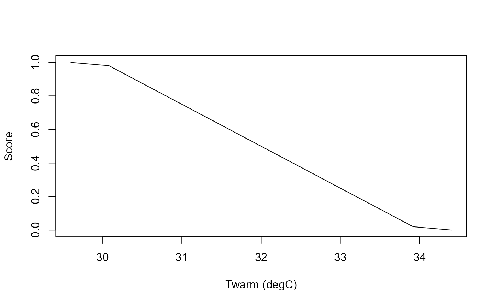

Generate a diagnostic membership curve for a crop requirement
Source:R/criterion-engine.R
criterion_curve.RdGenerate a diagnostic membership curve for a crop requirement
Examples
req <- crop_requirement("Twarm", "climate", "degC", "decreasing", c(30, 34),
source = "illustrative", source_id = "demo-heat")
cc <- criterion_curve(req, n = 11)
cc
#> value suitability
#> 1 29.60 1.00
#> 2 30.08 0.98
#> 3 30.56 0.86
#> 4 31.04 0.74
#> 5 31.52 0.62
#> 6 32.00 0.50
#> 7 32.48 0.38
#> 8 32.96 0.26
#> 9 33.44 0.14
#> 10 33.92 0.02
#> 11 34.40 0.00
plot(cc$value, cc$suitability, type = "l", xlab = "Twarm (degC)", ylab = "Score")
